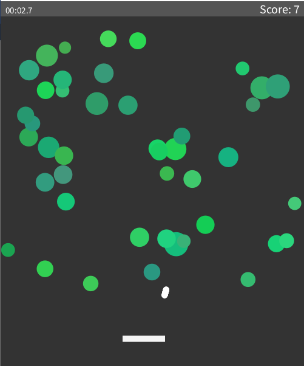

Krystian TurlejI have some previous programming experience in python since I did A-Level Computer Science. I also have some experience in JavaScript because of a personal project I did, which was a discord bot that took specific tweets from twitter using their API, and posted them in a discord channel. Apart from programming I am also interested in busiess and investing, I spend some of my free time reading books and doing research about those. |
||
|
|
||
Bootcamp 2021: Classic brick breaker game, but using bouncing balls insteadMy final programming project, concluding the 2 week Programming Bootcamp at City. This project is a variation of the classic brick breaker game, but instead of bricks, there are balls bouncing around the screen. I found creating this game quite challenging, but also quite enjoyable. This project demonstrates the use of interaction, methods, loops, groups, randomness, and objects and classes. The platform at the bottom of the screen is controlled by the movement of the mouse, and the aiming line determines how fast the ball will go, the closer to the ball, the slower the velocity. If the ball falls below the platform it will be game over, and the objective is to keep the main ball up long enough to destroy all 50 bouncing balls. Check out the code on Github: GitHub Repo | ||
|  | ||